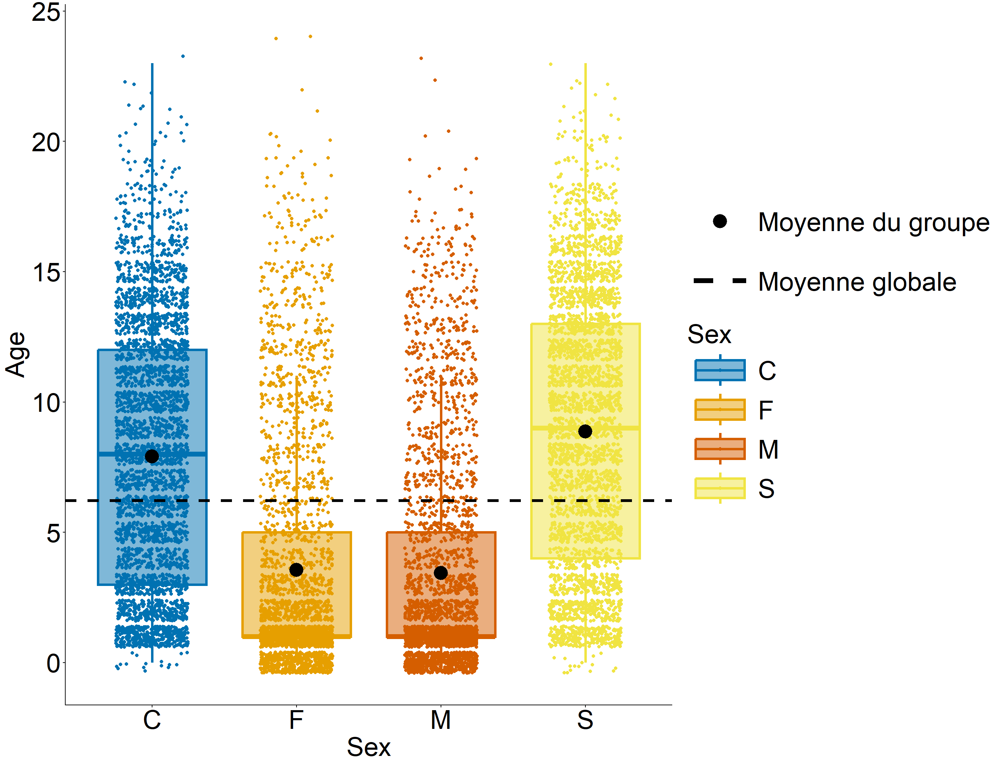
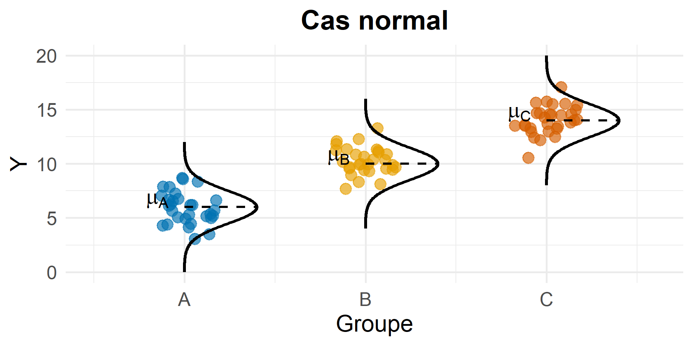
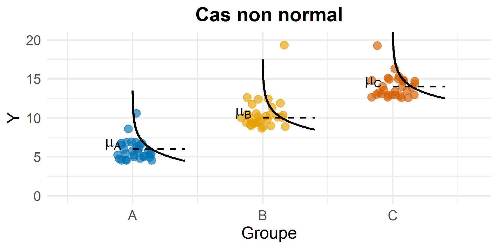
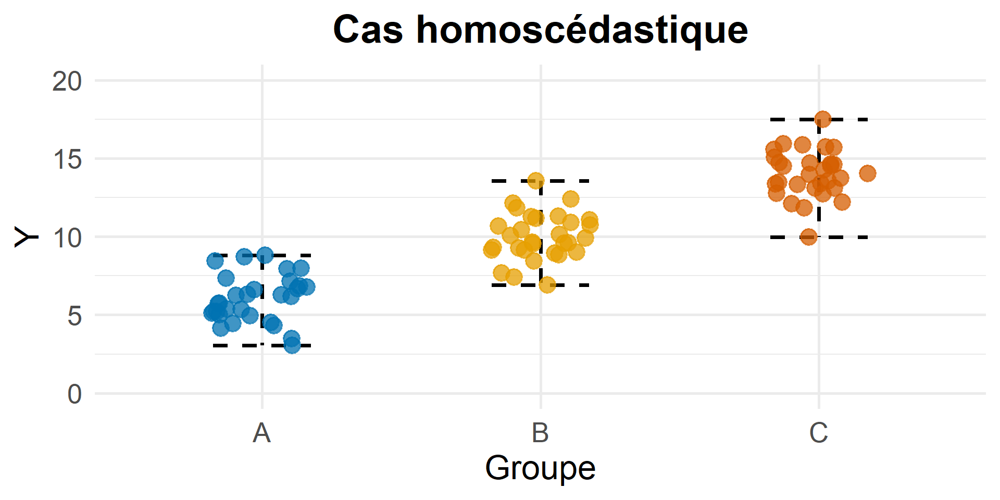
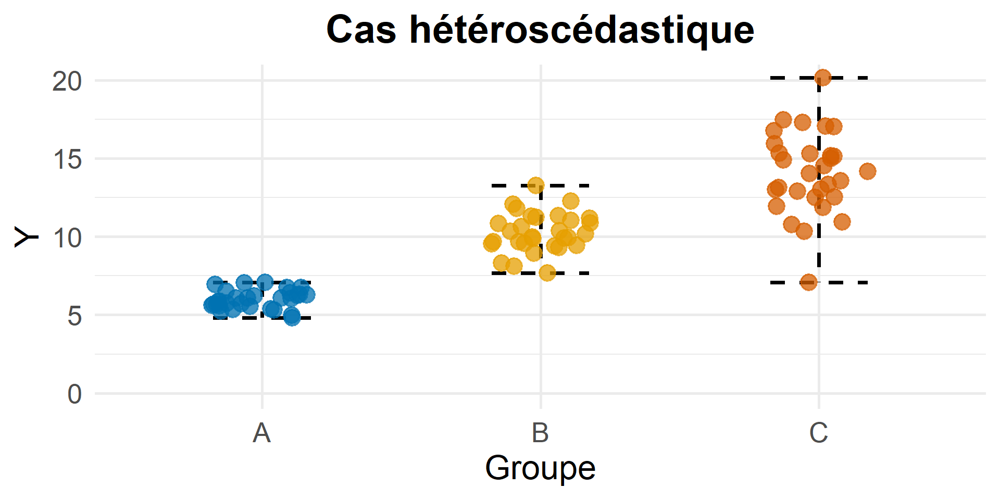
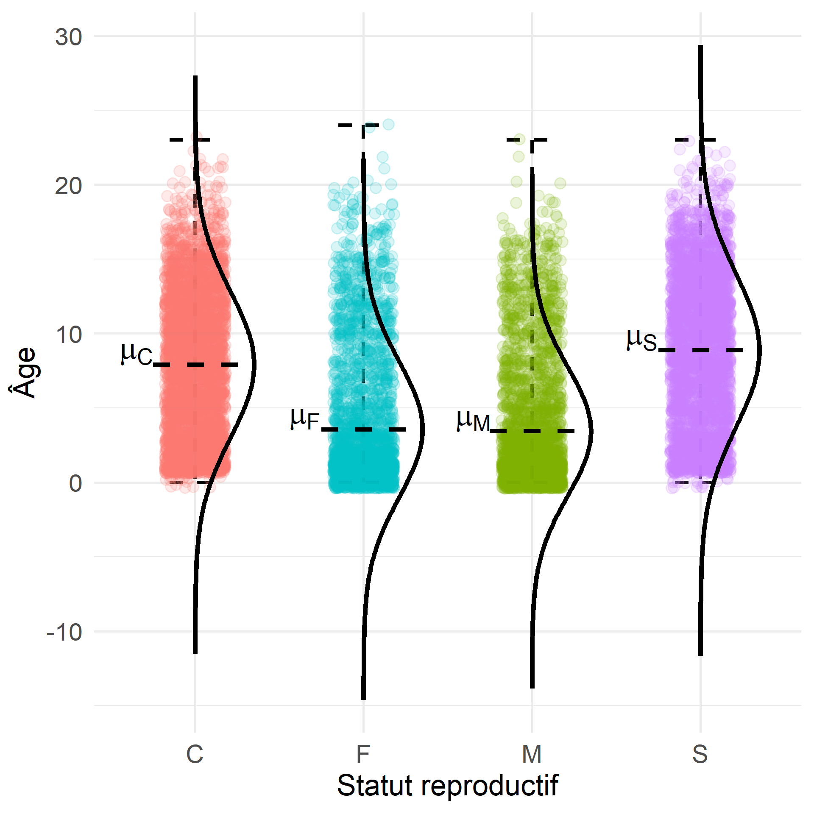

| ID | Sex | Age |
|---|---|---|
| 1 | M | 1 |
| 2 | F | 1 |
| 3 | M | 1 |
| 4 | C | 12 |
| 5 | S | 12 |
| 6 | F | 2 |
| 7 | F | 1 |
| 8 | F | 1 |
| 9 | M | 1 |
| 10 | M | 7 |
L’analyse de variance (ANOVA) permet de déterminer l’influence de \(k\) modalités d’une ou plusieurs variables explicatives (appelées facteurs) sur la moyenne d’une variable quantitative à expliquer \(Y\).
| Questions de recherche | Facteur(s) {modalités} | \(Y\) = variable expliquée |
|---|---|---|
| Le type d’alimentation (granules, foin, …) influence-t-il la vitesse de croissance de l’animal ? | Type d’alimentation {granules, foin, …} | Vitesse de croissance |
| Le quartier a-t-il un effet sur le prix d’un logement ? | Quartier {Capitole, Purpan, …} | Prix du logement |
| La durée de guérison de la souris diffère-t-elle selon son sexe et/ou le type de traitement reçu ? | Sexe {M stérilisé ou non / F stérilisé ou non} + Type de traitement reçu {Traitement A, B ou C} | Durée de guérison |
Note
L’objectif de l’ANOVA est de comparer les moyennes de \(Y\) pour chacun des groupes (\(=\) facteur \(\times\) modalité) afin de voir si le(s) facteur(s) étudié(s) a(ont) une influence sur \(Y\).
L’analyse de variance (ANOVA) permet de déterminer l’influence de \(k\) modalités d’une ou plusieurs variables explicatives (appelées facteurs) sur la moyenne d’une variable quantitative à expliquer \(Y\).
| Questions de recherche | Facteur(s) {modalités} | \(Y\) = variable expliquée |
|---|---|---|
| Le type d’alimentation (granules, foin, …) influence-t-il la vitesse de croissance de l’animal ? | Type d’alimentation {granules, foin, …} | Vitesse de croissance |
| Le quartier a-t-il un effet sur le prix d’un logement ? | Quartier {Capitole, Purpan, …} | Prix du logement |
| La durée de guérison de la souris diffère-t-elle selon son sexe et/ou le type de traitement reçu ? | Sexe {M stérilisé ou non /F stérilisé ou non} + Type de traitement reçu {Traitement A, B ou C} | Durée de guérison |
Dans ce cours, on va se concentrer sur l’ANOVA à un facteur :
Quel est l’effet d’UN facteur à \(k\) modalités sur UNE variable \(Y\).
Jeu de données utilisé : Statut reproductif et âge des animaux, collectés dans trois hôpitaux vétérinaires universitaires du nord de l’Italie (Cozzi et al. 2017).
| Modalité | Définition | Nombre d’individus |
|---|---|---|
| F | Femelle non stérilisée | 2 788 |
| M | Mâle non stérilisé | 2 883 |
| S | Femelle stérilisée | 3 479 |
| C | Mâle stérilisé | 3 703 |
| ID | Sex | Age |
|---|---|---|
| 1 | M | 1 |
| 2 | F | 1 |
| 3 | M | 1 |
| 4 | C | 12 |
| 5 | S | 12 |
| 6 | F | 2 |
| 7 | F | 1 |
| 8 | F | 1 |
| 9 | M | 1 |
| 10 | M | 7 |
Y a-t-il un effet du statut reproductif de l’animal sur son âge au moment de sa consultation ?
Hypothèses :
\[\small H_0:\mu=\mu_0 \qquad\qquad\qquad H_1:\mu\neq\mu_0\]
erreurs :
| Ne pas rejeter \(\small H_0\) | Rejeter \(\small H_0\) | |
|---|---|---|
| \(\small H_0\) vraie | ✅ Bonne décision | ❌ Type I : \(\small \alpha\) |
| \(\small H_0\) fausse | ❌ Type II : \(\small \beta\) | ✅ Bonne décision |
\[\small \alpha = P(\text{rejeter }H_0\mid H_0\text{ vraie})\]
\[\small \beta = P(\text{ne pas rejeter }H_0\mid H_0\text{ fausse})\]
Statistique de test :
\[\small T = \frac{\bar X-\mu_0}{s/\sqrt n}\]
La statistique de test mesure l’écart à \(\small H_0\) relativement à la variabilité de l’estimation.
\[\small H_0 \quad \Longrightarrow \quad T\sim \mathcal{N}(0, 1)\]
p-value et décision :
\[\small p = P_{H_0} \left( |T|\geq |T_{\mathrm{obs}}| \right)\]
La p-valeur est le plus petit risque pour lequel on rejetterait \(\small H_0\).
\[\small p<\alpha \quad\Longrightarrow\quad \text{rejet de }H_0\]
\[\small p\geq\alpha\quad\Longrightarrow\quad\text{non-rejet de }H_0\]
Hypothèses :
\[\small H_0:\mu_1=\mu_2=\cdots=\mu_J \qquad\qquad\qquad H_1:\text{au moins deux moyennes diffèrent} \]
erreurs :
| Ne pas rejeter \(\small H_0\) | Rejeter \(\small H_0\) | |
|---|---|---|
| \(\small H_0\) vraie | ✅ Bonne décision | ❌ Type I : \(\small \alpha\) |
| \(\small H_0\) fausse | ❌ Type II : \(\small \beta\) | ✅ Bonne décision |
\[\small \alpha = P(\text{rejeter }H_0\mid H_0\text{ vraie})\]
\[\small \beta = P(\text{ne pas rejeter }H_0\mid H_0\text{ fausse})\]
Statistique de test :
\[ \small F= \frac{\text{variabilité entre les groupes}} {\text{variabilité au sein des groupes}} \]
Nouvelle statistique de test adaptée aux données.
\[ \small H_0\Longrightarrow F\sim\mathcal{F}_{J-1,N-J} \]
p-value et décision :
\[\small p = P_{H_0} \left( F \geq F_{\mathrm{obs}} \right)\]
\[\small p<\alpha \quad\Longrightarrow\quad \text{rejet de }H_0\]
\[\small p\geq\alpha\quad\Longrightarrow\quad\text{non-rejet de }H_0\]

mais :
Considérons un individu \(i\) appartenant au groupe \(j\) (facteur \(\times\) modalité) et une variable quantitative \(Y\) mesurée sur cet individu. Le modèle d’analyse de variance décrit la valeur de \(Y_{ij}\) sous la forme:
\[ \underbrace{Y_{ij}}_{\text{valeur observée}} = \underbrace{\color{#CC79A7}{\mu}}_{\text{moyenne globale de $Y$}} + \underbrace{\color{#009E73}{\alpha_j}}_{\text{effet du groupe $j$}} + \underbrace{\epsilon_{ij}}_{\text{variabilité individuelle (bruit aléatoire)}} \]
La moyenne de \(Y\) dans le groupe \(j\) est donnée par \(\mu_j = \color{#CC79A7}{\mu} + \color{#009E73}{\alpha_j}.\)
Warning
Modèle ≠ méthode : le modèle ANOVA décrit la structure des données. La méthode ANOVA permet d’ajuster ce modèle, de décomposer la variabilité et de tester les effets du facteur.
\[ Y_{ij} = \underbrace{\color{#CC79A7}{\mu} + \color{#009E73}{\alpha_j}}_{= \mu_j {\small \text{ (moyenne du groupe } j)}} + \epsilon_{ij}. \]
| La mesure prise sur un individu n’a pas d’influence sur celle prise sur un autre. |


| Pour un groupe \(j\) donné, les points observés \(y\) sont distribués selon une distribution Normale centrée sur la moyenne du groupe. |


| La dispersion des \(Y\) est constante quel que soit le groupe. |
